زدني منصة تعليمية تهدف إلى جعل رحلة التعلم أكثر وضوحاً، من خلال مسار معرفي يساعد الطلاب على الانتقال من الأساسيات حتى الاحتراف. كان الهدف بناء هوية تقنية حديثة تعكس التطور، النمو واستمرارية التعلم.
احتاجت العلامة إلى نظام بصري يترجم فكرة "رحلة المعرفة" ويحّول التعلم إلى تجربة مرئية واضحة ومُلهمة.
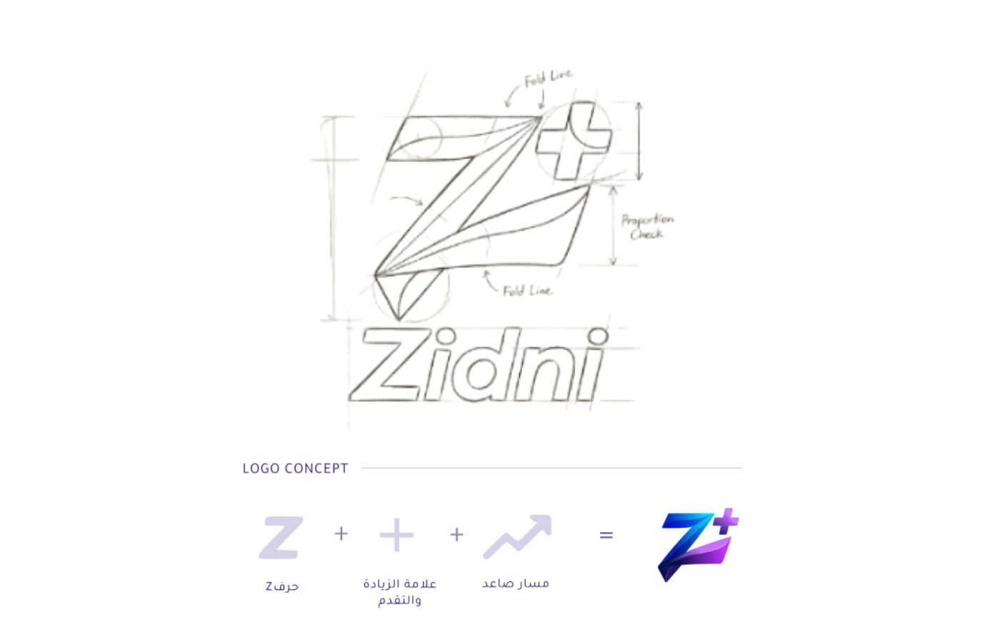
تم بناء الشعار من ثلاثة عناصر أساسية:
Z تمثل اسم زدني.
علامة + ترمز للإضافة والنمو.
المسار الصاعد يعبر عن رحلة التطور والانتقال لمستويات أعلى.
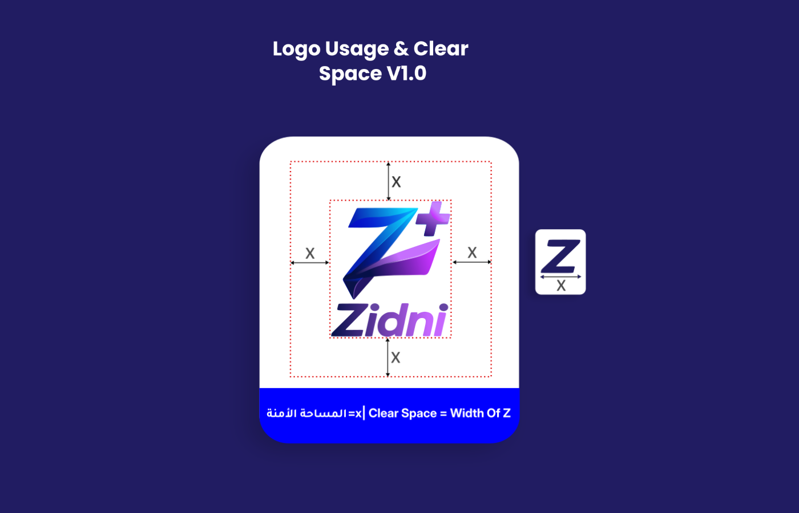
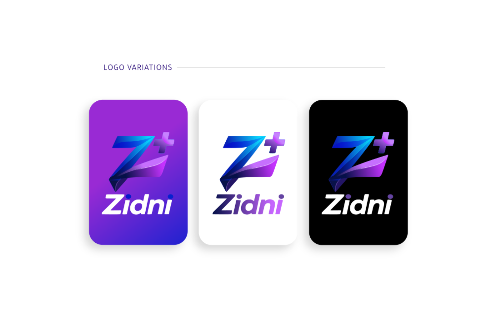
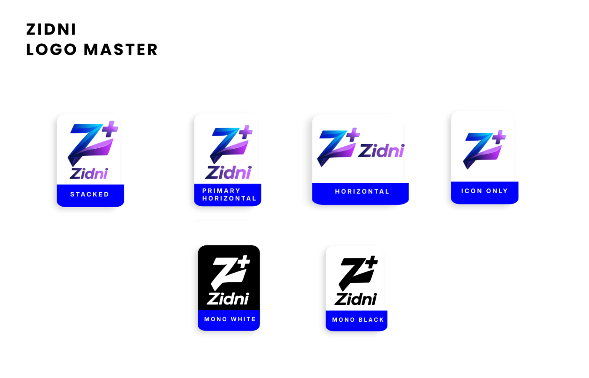
تم تطوير مجموعة من الاستخدامات لضمان مرونة الهوية على مختلف المنصات الرقمية والمطبوعة.
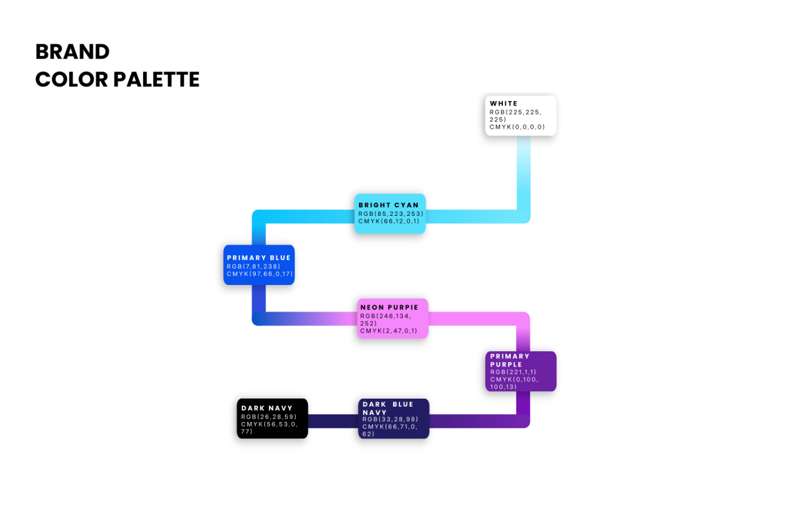
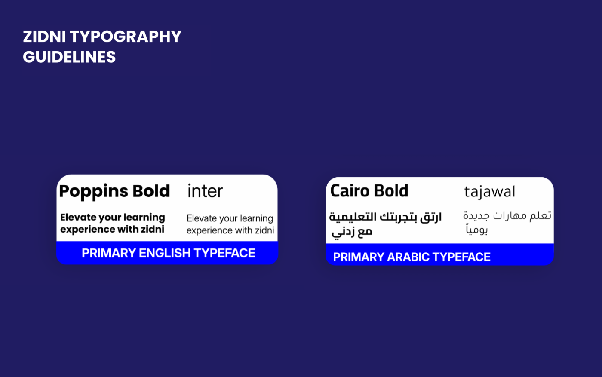
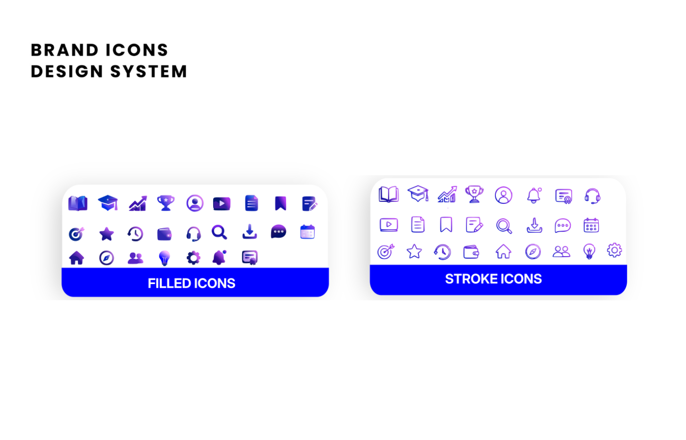
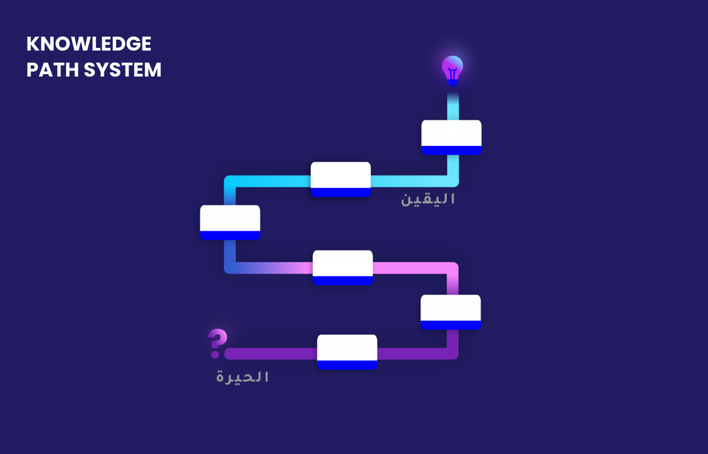
تم تصميم مسار بصري يمثل رحلة الطالب، حيث ينتقل عبر مراحل التعلم حتى الوصول إلى الاحتراف.
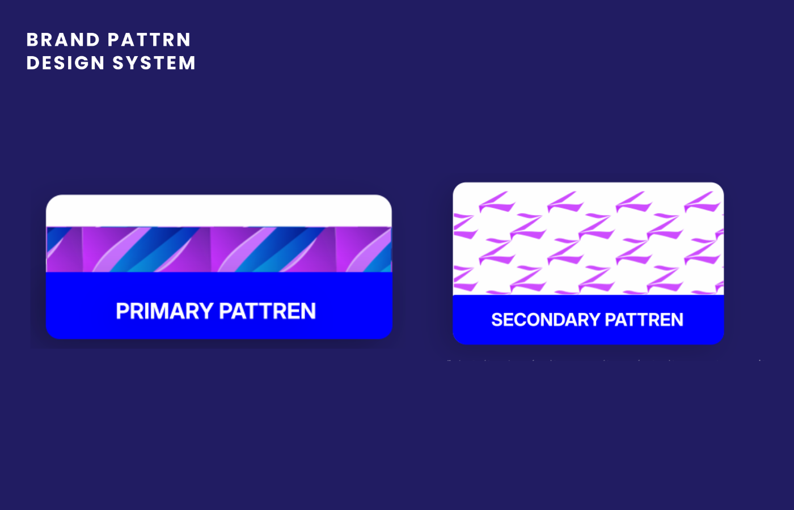
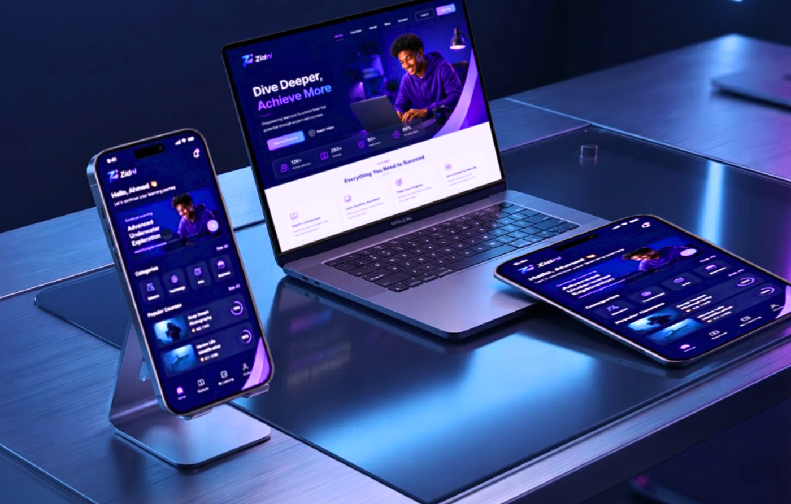
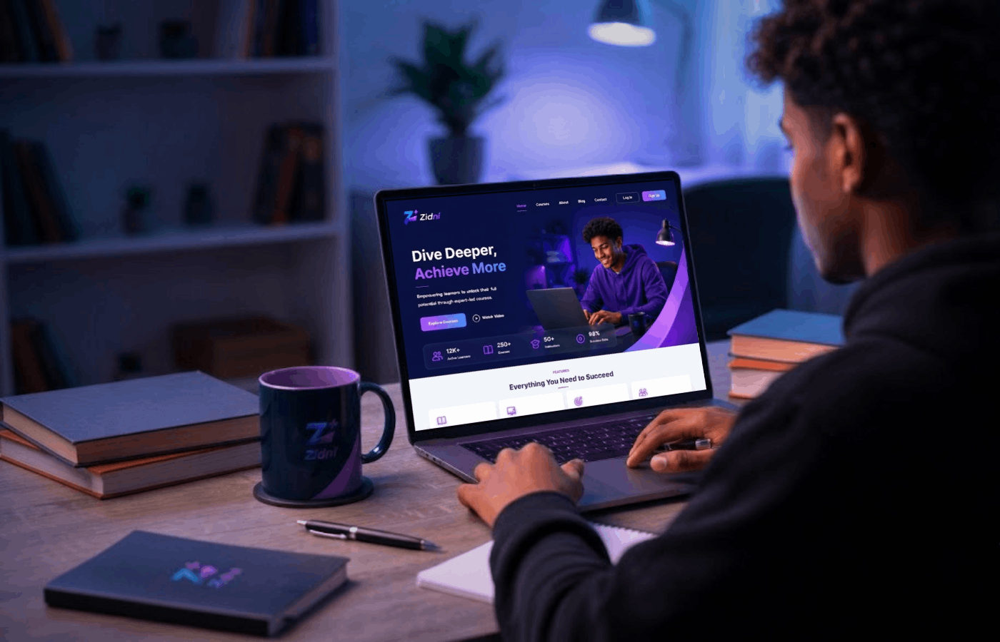
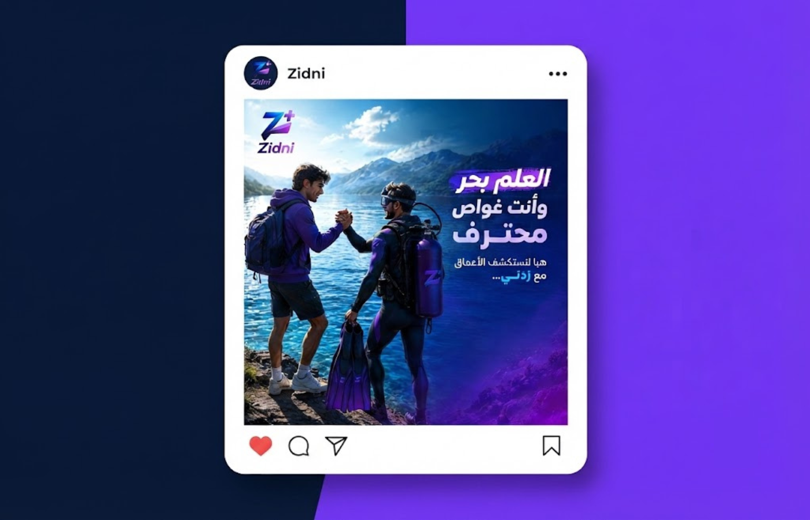
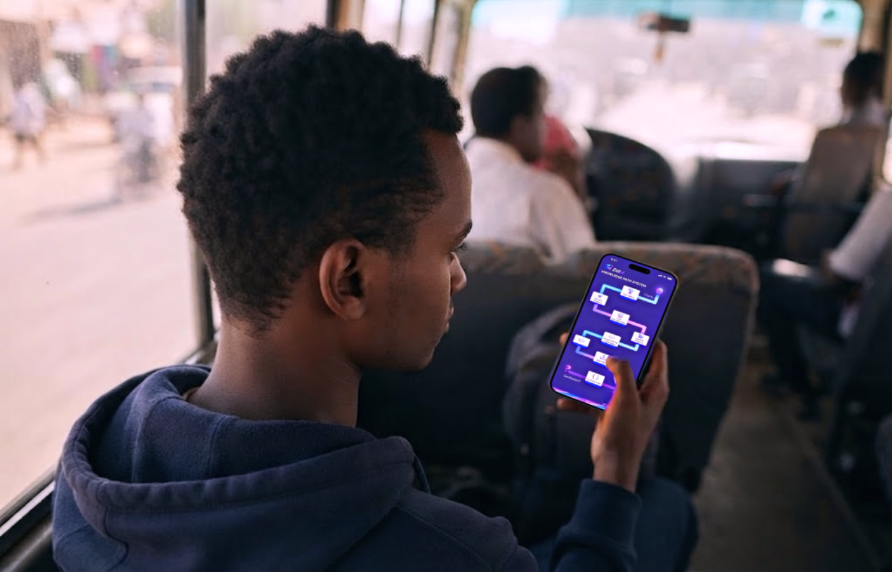
زدني تحول المعرفة إلى مسار واضح نحو المستقبل.